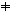
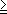

| Main Page | History Topics Index |
Heinrich Eduard Heine worked on Legendre polynomials, Lamé functions and Bessel functions.
Heine-Sommerfeld functions are defined in terms of Bessel functions by the equations
Yn(z) = (p/2z)1/2 Jn+1/2(z),
zn(1)(z) = (p/2z)1/2 H(1)n+1/2(z), zn(2)(z) = (p/2z)1/2 H(2)n+1/2(z).
He is best remembered for the Heine-Borel
theorem which stated that a subset of the reals is compact if and only
if it is closed and bounded. Heine
also formulated the concept of uniform continuity.
Visit qqq-Binomial
Theorem-,q-Hypergeometric
Function
Felice Casorati, an Italian mathematician, recognized many of the analogous properties of difference and differential equations. The Casoratian is the difference equation analog to the Wronksian in differential equations. He developed the Casorati formula for linear difference equations.
Using N+ or Nn0+ as definition set , denoting a sequence by { yn }, which is the set of all values of the function y on Nn0+ .
Definition 1
Let p0 (n) = 1, p1 (n), ..., pk
(n), gn be k + 2 functions defined on Nn0+
. An equation of the form
yn+k + p1 (n) yn+k-1 + ... + pk (n) yn = gn

0.With (1), the following k initial conditions
yn0 = c1 , yn0+1 = c2 , ..., yn0+k-1 = ck
are associated where ci are real or complex constants.
Definition 2
If for every n e Nn0+
, g(n) = 0, then the equation (1) is said to be homogenous.
Definition 3
The function fi (n), i= 1,2,...,k are
linearly independent if for all n,
|
å n = 1 |
ai fi (n) | = 0 |
implies ai = 0, i = 1,2,...,k.
A sufficient condition for the functions fi (n), i= 1,2,...,k, to be linearly independent is that there exists an N

" /a height=14 width=7> n0 such that det K(N) 0.Let us now take k functions fi (n) defined
on Nn0+ and define the matrix
|
K(n) = |
ç è |
f1 (n)
f1 (n+1) . . . . . . f1 (n+k-1) |
f2 (n)
f2 (n+1) . . . . . . f2 (n+k-1) |
. . .
. . . . . . . . . . . . |
fk (n)
fk (n+1) . . . . . . fk (n+k-1) |
÷ ø |
Any other solution y(n, n0 , c) can be expressed as a linear combination of
The matrix K(n) is called the matrix of Casorati (Casoratian) and it plays in the theory of difference equations the same role as the Wronskian (Wronski) matrix in the theory of linear differential equations.
Georg Friedrich Bernhard Riemann is known for using Riemann's zeta function to investigate the distribution of the prime numbers.
The Riemann zeta function z(s) is defined
by
|
|
å n = 1 |
n-s , |
(s > 1).
z(2n) is a rational multiple of p2n
:
|
|
(2n)! |
|
where Bn is Bernoulli's
number. Thus
|
|
6 |
|
|
90 |
One of the most striking property of the zeta function, discovered by
Riemann himself, is the functional
equation :
|
|
ç è |
2 |
÷ ø |
|
From the continuation of z(s) in the half
plane Â(s) > 0, notice that the functional
equation is
gives the analytic continuation of z(s)
to the whole complex plane.
This analytic continuation can be obtained in several ways.
The complement formula of the Gamma function entails the formula:
c(s)c(1-s) = 1,
which gives a symetry of the functional equation with respect to the line Â(s) = 1/2.
Visit q-Gamma Function, Regularized Gamma Function, Mangoldt Function